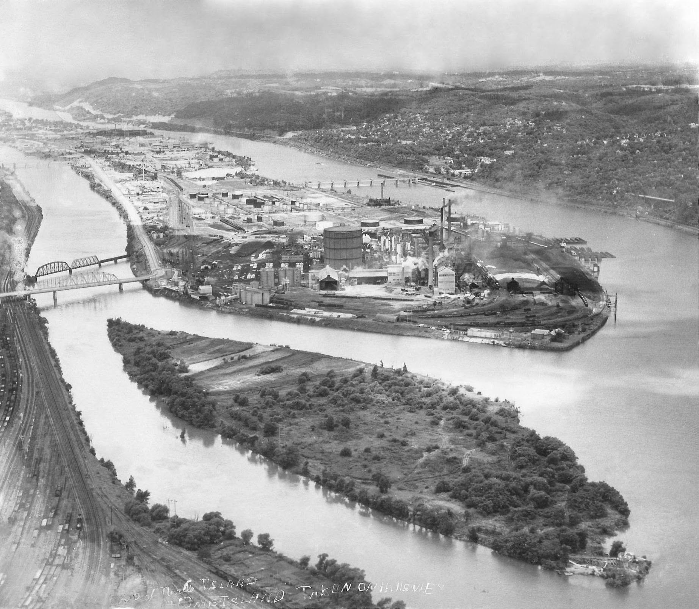

Pittsburgh & Chartiers Valley Division
HART Railroad
Welcome to Neville Island — where a single furnace and two miles of rail sparked an industrial legacy, over a century old and still at work in the heart of the Ohio River Valley.
Step into the island
Primers, industries, photographs, official publications, and the railroad story — the same world we hand to new crew.
Operator briefing
Island history, jobs on the board, destination colors, and the track scale.
Industries
Aristech, Stucki, Calgon, Ferrellgas, Kosmos, Shenango — commodities and logos.
Photo gallery
Place, layout captures, maps, and current control panels — rolling stock is separate.
Rolling stock
Car fleet sides, aisle roster photos, and published power.
Articles
Pittsburgh Coke & Chemical chronology, POHC-line plants, and Chartiers Valley railroads.
Official publications
Pipeline-published primers, crew sheets, station maps, and SOPs.
Layout Explorer
Full-width Digicon Master board — click switches and masts for hardware details.
Device roster
Searchable turnout, signal, and sensor list for the desk.
Panel gallery
Digicon, classic CTC, and Neville Island LE screenshots in Photos → Control panels.
Dispatcher guides
USS CTC, CATS Digicon, Auto Dispatcher, Digicon system.
Neville Island helix
Construction plan, half-lap screw template, build status, and an index of every printed fixture (STL).
Live tools
STS, MQTT Mimic, and JMRI web on this Mac.